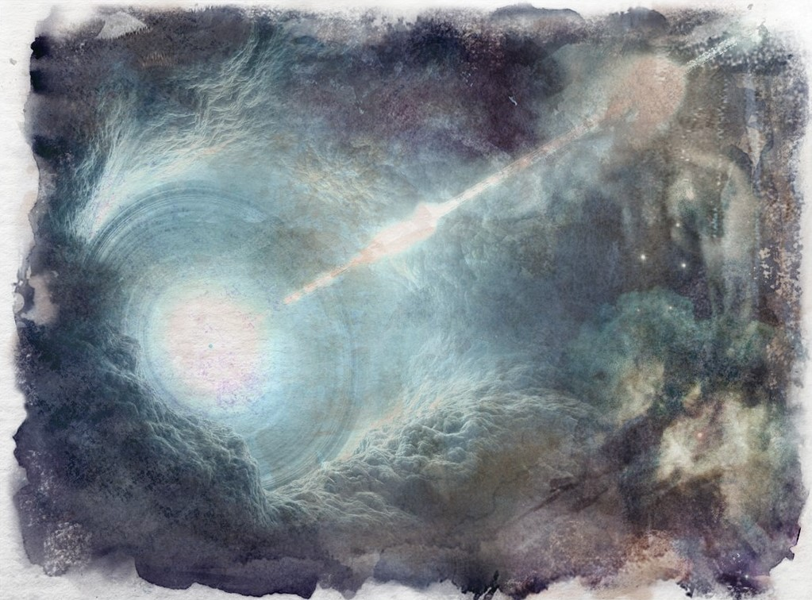

The Atet
The atet are orbs of celestial light, a part of the Aeon pushed towards the Shrivatsa. These orbs float through space until they strike the energy lattice and their energies are dispersed into its matrix. The next purge by the shrivatsa can be predicted by how many atet fill the heavens at any one time as more and more are sent out with increased frequency to fuel the increasing power needs of the shrivatsa. To mortal eyes, they seem like stars slowly drifting across the heavens until they suddenly bloom into nebulaeic dispersal patterns against the shrivatsa.